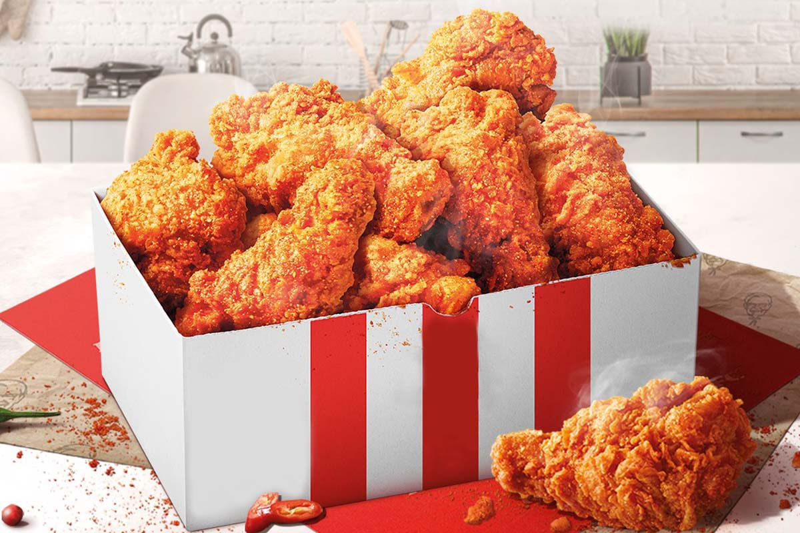

ไก่ทอด KFC

“เคเอฟซี” หรือ “เคนทักกี ฟรายด์ ชิกเก้น” หรือ “ไก่ทอดเคนทักกี”
เป็นหนึ่งในเครือร้านอาหารจานด่วนเก่าแก่และมีชื่อเสียงที่สุดของโลก
ซึ่งมีสำนักงานใหญ่อยู่ที่เมืองหลุยส์วิลล์ ในรัฐเคนทักกีของสหรัฐ
ก่อตั้งเมื่อปี 2473 โดย พ.อ.ฮาร์แลนด์ เดวิด แซนเดอร์ส
บุคคลซึ่งชาวโลกรู้จักกันในชื่อ “ผู้พันแซนเดอร์ส”
วัตถุดิบ
- เกลือ (2/3 ช้อนชา)
- โหระพา (1/2 ช้อนชา)
- ใบโหระพา (1/2 ช้อนชา)
- ออริกาโน (1/3 ช้อนชา)
- เกลือขึ้นฉ่าย (1 ช้อนชา)
- พริกไทยดำ (1 ช้อนชา)
- มัสตาร์ดแห้ง (1 ช้อนชา)
- ปาปริก้า (4 ช้อนชา)
- เกลือกระเทียม (2 ช้อนชา)
- ขิงป่น (1 ช้อนชา)
- พริกไทยขาว (3 ช้อนชา)
- บัตเตอร์มิลก์ 1 ถ้วย
- ไข่ ตีให้เข้ากัน 1 ฟอง
- เนื้อไก่ที่หั่นแล้ว
- น้ำมันคาโนลาสำหรับทอดไก่
วิธีทำไก่ทอดKFC
- ขั้นตอนการทำเมนูทอดนี้
- ขั้นตอนถัดไป
- เริ่มด้วยการผสมแป้งและเครื่องเทศทั้ง 11 ชนิดในอ่างผสม
หมักไก่ในส่วนผสมของบัตเตอร์มิลค์แล้ว พักไว้ที่อุณหภูมิห้องประมาณ 20-30
นาที
- นำไก่ออกจากอ่างหมัก จากนั้นพักไว้จนกว่าของเหลวส่วนเกินจะหมด
คลุกเคล้าไก่ลงในแป้งผสมเครื่องเทศเพื่อให้แน่ใจว่าแป้งส่วนเกินหลุดออก
แล้วพักไว้บนตะแกรง 20 นาที
- ตั้งน้ำมันในหม้อเหล็กหล่อด้วยความร้อนสูง อุณหภูมิถึง 350 องศาฟาเรนไฮต์
(ประมาณ 175 องศาเซลเซียส) จากนั้นลดไฟลงเป็นไฟกลาง และรักษาอุณหภูมิเท่าเดิม
ทอดไก่ครั้งละ 3-4 ชิ้น เมื่อไก่เริ่มเหลืองกลับด้านแล้วทอดต่ออีก 15-18 นาที
เมื่อไก่สุกแล้ว ให้นำไก่ออกจากน้ำมันแล้ววางบนกระดาษซับมัน
- พักน้ำมันกลับสู่อุณหภูมิเดิมที่ 350 องศาฟาเรนไฮต์
ก่อนเริ่มทอดไก่อีกครั้งจนกว่าไก่ที่เตรียมไว้จะหมด
| พลังงาน |
ไขมันสุทธิ |
โคเลสเตอรอส |
โซเดียม |
คาร์โบไฮเดรต |
ใยอาหาร |
โปรตีน |
| 280 แคลอรี |
19 ก. |
130 มก. |
410 |
6 ก. |
<1 ก. |
21 ก. |
COMMENT